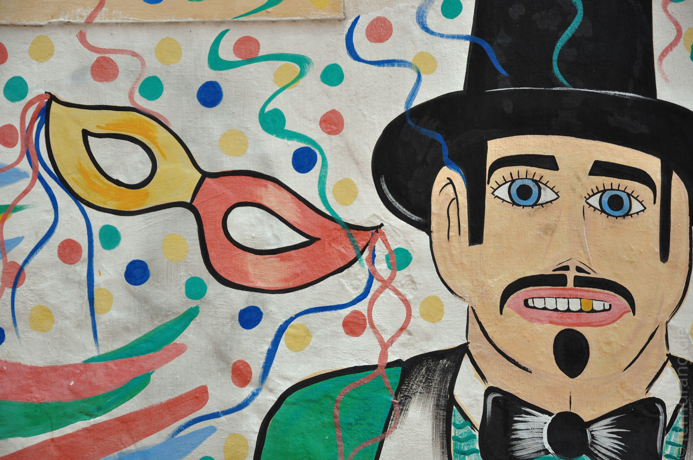

Wir waren sehr erleichtert, dass wir nach mehreren Tagen erfolgloser Suche, am letzten Abend doch noch eine Transportmöglichkeit für den Rückweg aufgetan haben. Anscheinend wollte jeder am dritten nach Hause. In Jeri fing unser Rückweg an. In vier Stunden über Strand und Straße sind wir pünktlich zur Rush Hour in Fortaleza angekommen. Wir mussten direkt zum Flughafen, weil am selben Abend noch einen Flug nach Recife hatten. Die endlose Fahrt durch die trostlosen, dunklen Straßen von Fortaleza hat den Plan, gleich weiterzufahren, bestätigt.
Anstatt in Recife die letzte Nacht zu verbringen, sind wir mit dem Taxi ins schönere Olinda gefahren. Das Hotel Pousada dos Quatro Cantos ist in einer herrschaftlichen, alten Villa im alten Zentrum gelegen. Unser Zimmer im Souterrain war zwar fensterlos aber geräumig und sauber. Dafür hatten wir am nächsten Morgen beim Frühstück einen tollen Blick in den Innenhof. Nach den Tagen in Jeri und davor hat Olinda einen erfrischend urbanen Charme. Zum Abschied von Brasilien sind wir bei strömendem Regen für die letzten Caipirinhas um die Ecke in die Bar Aloma gegangen. Dort hat gab es Live-Musik – eine Art brasilianischer Rock-Jam mit wechselnder Belegung – und super Stimmung. Das versoffen künstlerische Ambiente hat einen Hauch Paris verbreitet.


Am nächsten Tag hatten wir noch viel Zeit Olinda zu erkunden, bevor wir zum Flughafen mussten. Der Stadtspaziergang hat sich wirklich gelohnt! Das Kopfsteinpflaster führt steile Straßen hinauf, die von alten Kirchen und kolonialen Häusern gesäumt sind. Von den Hügeln aus geht der Blick über Olindas Kirchen auf der einen Seite idyllisch zum Meer und auf der anderen Seite über den endlosen Hochhauswald von Recife, das ohne erkennbare Grenze anschließt. Im Gegensatz zu geleckten Kolonialstädtchen wie Trinidad (Kuba) ist Olinda, wo jede freie Mauer mit wilden Graffitis bemalt ist, eine herbere Schönheit.
